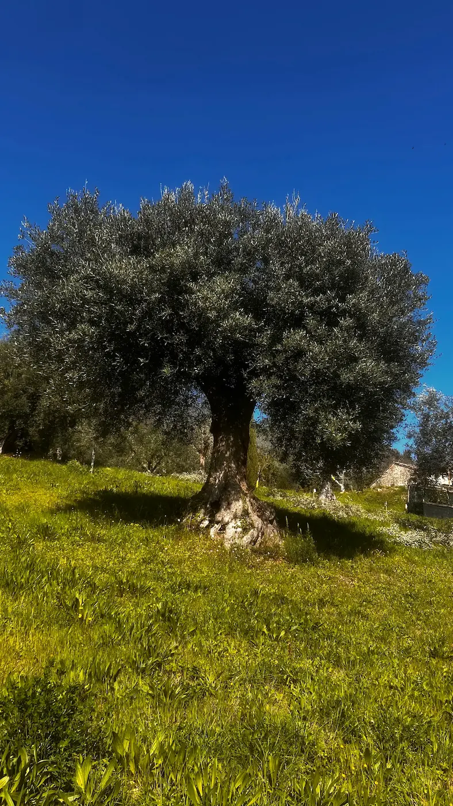
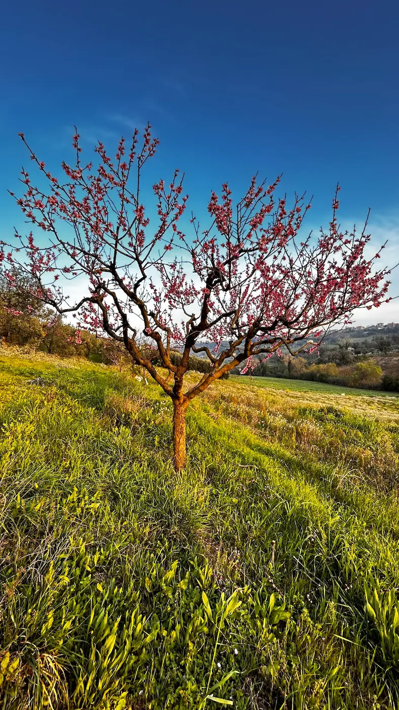
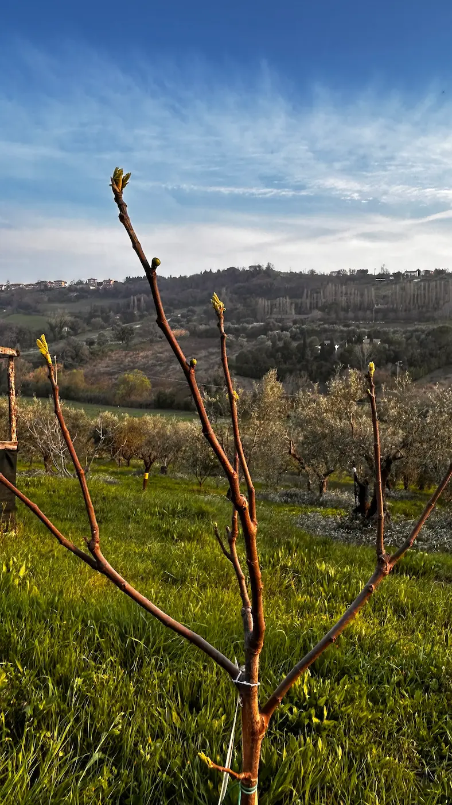
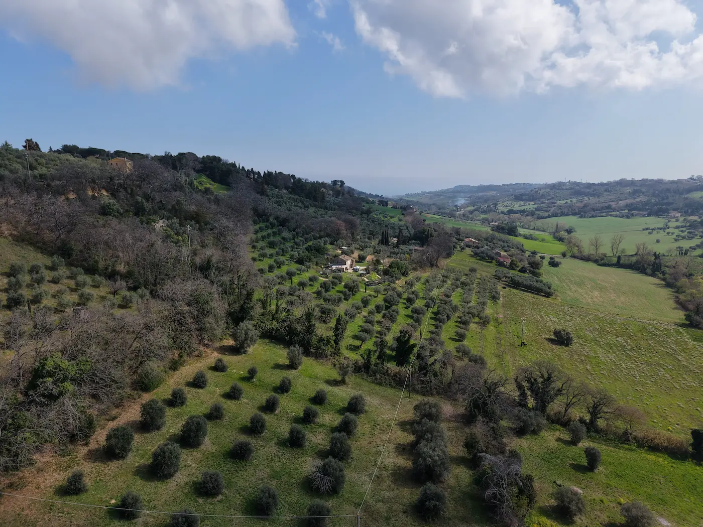
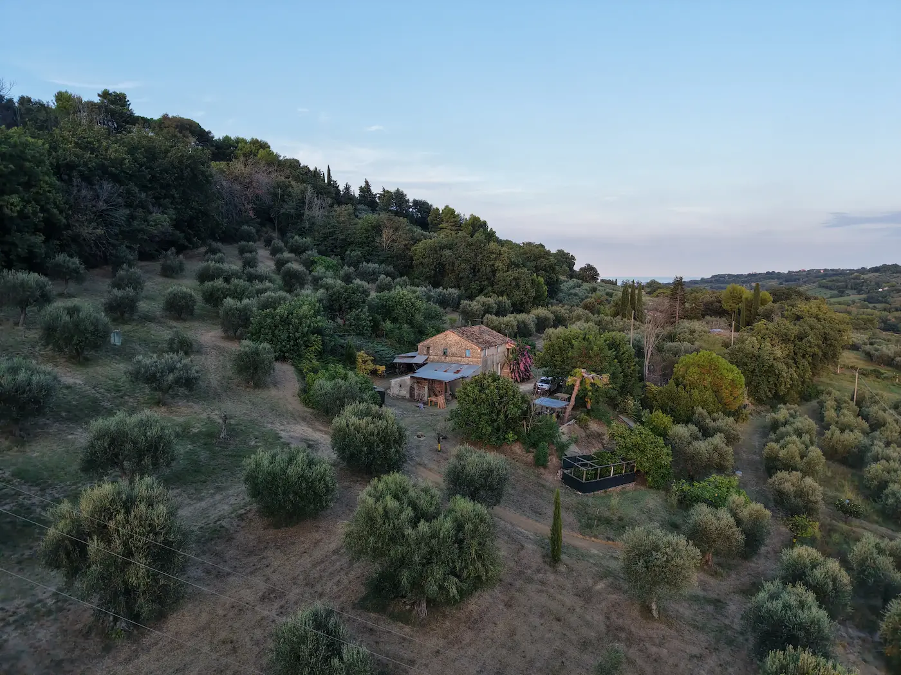
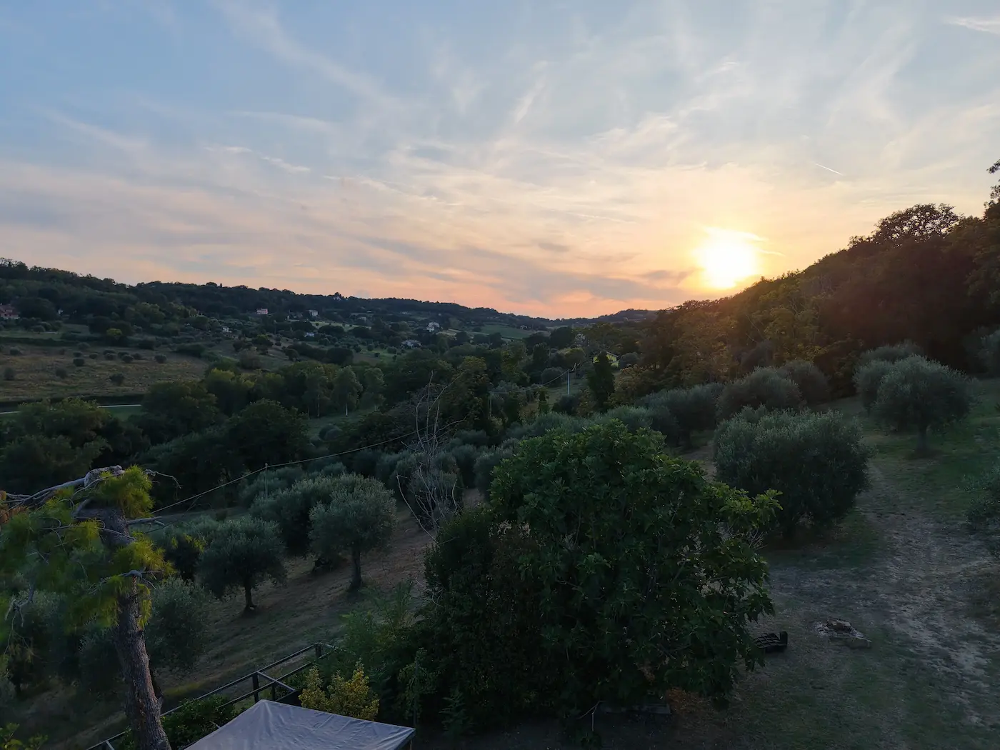
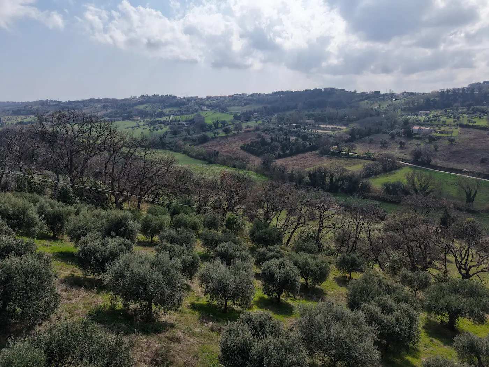
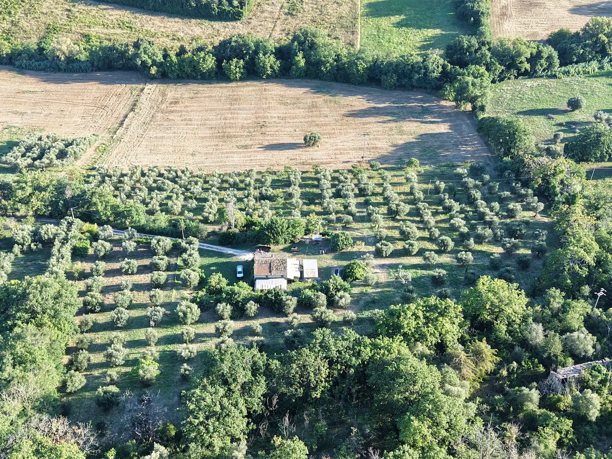
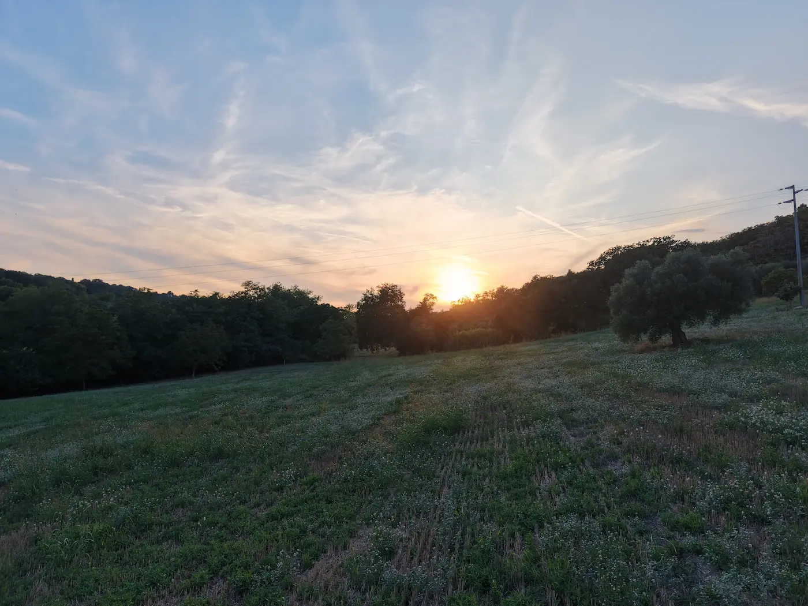

Territorio collinare di Civitanova Marche
Le colline di Civitanova Marche rappresentano uno degli ambienti più favorevoli all’agricoltura nelle Marche. La combinazione tra clima temperato, esposizione solare, ventilazione marina e biodiversità naturale crea condizioni ideali per coltivazioni sane e di qualità.



Il clima è temperato, influenzato dalla vicinanza al Mare Adriatico. Le brezze marine mitigano le temperature estive mentre gli inverni restano relativamente miti.
Le coltivazioni si sviluppano su dolci colline tra i 50 e i 200 metri sul livello del mare, garantendo ottima esposizione solare e drenaggio naturale.
La breve distanza dal mare favorisce ventilazione costante, riducendo umidità stagnante e malattie delle piante.
Il territorio ospita una ricca varietà di flora e fauna, elemento fondamentale per un ecosistema agricolo equilibrato.
Queste condizioni permettono coltivazioni più sane, minore necessità di interventi e qualità superiore dei prodotti.





